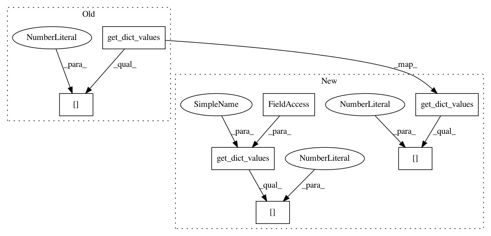

d541fa5024351b2e79661fc6404d8bd723ab7f08,pixyz/distributions/flow_distribution.py,InverseTransformedDistribution,sample,#InverseTransformedDistribution#Any#Any#Any#Any#,91
Before Change
sample_dict = self.prior.sample(z_dict, shape=shape, batch_size=batch_size, return_all=True, **kwargs)
// inverse flow transformation
_z = get_dict_values(sample_dict, self.flow_output_var)[0]
x = self.inverse(_z)
output_dict = {self.var[0]: x}
if return_all:
After Change
sample_dict = self.prior.sample(z_dict, shape=shape, batch_size=batch_size, return_all=True, **kwargs)
// inverse flow transformation
_z = get_dict_values(sample_dict, self.flow_output_var)
_y = get_dict_values(sample_dict, self.cond_var)
if len(_y) == 0:
x = self.inverse(_z[0])
else:
x = self.inverse(_z[0], y=_y[0])
output_dict = {self.var[0]: x}
In pattern: SUPERPATTERN
Frequency: 3
Non-data size: 7
Instances
Project Name: masa-su/pixyz
Commit Name: d541fa5024351b2e79661fc6404d8bd723ab7f08
Time: 2019-04-26
Author: masa@weblab.t.u-tokyo.ac.jp
File Name: pixyz/distributions/flow_distribution.py
Class Name: InverseTransformedDistribution
Method Name: sample
Project Name: masa-su/pixyz
Commit Name: 896014a6c0c62d4de8ccd1db7104a668a938694a
Time: 2019-05-26
Author: masa@weblab.t.u-tokyo.ac.jp
File Name: pixyz/distributions/flow_distribution.py
Class Name: TransformedDistribution
Method Name: sample
Project Name: masa-su/pixyz
Commit Name: d541fa5024351b2e79661fc6404d8bd723ab7f08
Time: 2019-04-26
Author: masa@weblab.t.u-tokyo.ac.jp
File Name: pixyz/distributions/flow_distribution.py
Class Name: InverseTransformedDistribution
Method Name: inference